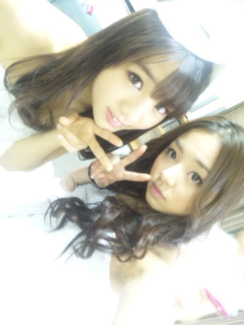

よしっ★! 今日は楽しいblogを書いてみよう(#・ω・#)/
普段のメンバーのこととか書くと
楽しいよネッ♪？
改めて人のいい所を探すことは
自分にとっても本当にいいことだと
思っています。
人間、
『ちょっとこの子苦手だ・ω・｀』
って思うことは
よくあることかもしれません。
でも、
人間完璧な人っていないと思うし、
誰にだって人には分からないこともあるかもしれないけど
いい所、悪い所はあると思うんです^^
だから、何かあったとしても
その子のいい所を考えてみたりすると
なんか、自分の気持ち的にも良くなったりすると思います♪^^
ってことで、
ん〜 同じ大阪の2人☆
さゆりんご♪とななせまる♪
のこと書こおかなっ=・ω・=
もし、誰誰のことも書いてほしいなっω ってのがあれば
コメントしてくださいね(*^^*)
ほいっ♪
さゆりんはねえ、
ど-しても大食いって印象が...笑
まあその通りやねんけど(^o^)
あれだね、さゆりん♪
すごい可愛い顔しとるω・*
ありゃあ、
アニメから出てきたみたいだ ・ω・
あと、まひろは
TVや握手会等でもいつも
自分のキャラを出せている所が
さゆりんに尊敬している所っ(*^^*)
ななせはねえ、
鳥好きで絵が上手いよねっ(^-^)
ほんで、好き嫌いがはっきり
しているのね＾ω＾
特に食べ物^^
一時、毎日毎日ななせのね嫌いな食べ物を聞いてて、
『もう言い過ぎやろ>ω<』って言ったら
『言いたがりやねんω』
って言われました>ω<
自分の思うことはちゃんと人に言うんですけど
自分が、厳しいこと言われたら
泣いちゃうんです^ω^
ななせらしい(*^^*)
そして、なんか癒し系の顔ですよね〃ω〃？
こんな感じでメンバーの事を
書いていくと、
ファンの皆さんも
もっとメンバーのことを
知れるかなぁ(*^^*)？
と思って＾＾
ってことで、また更新しますっ(*^^*)★

↑失いたくないから♪の時のだよω〃。
以上っ))
ろってぃーでした、のし。